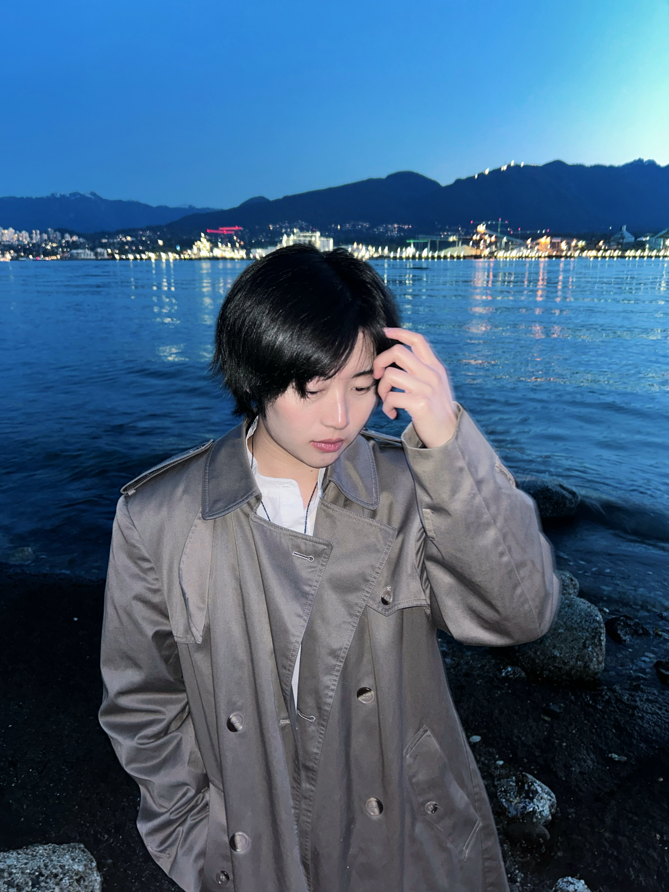
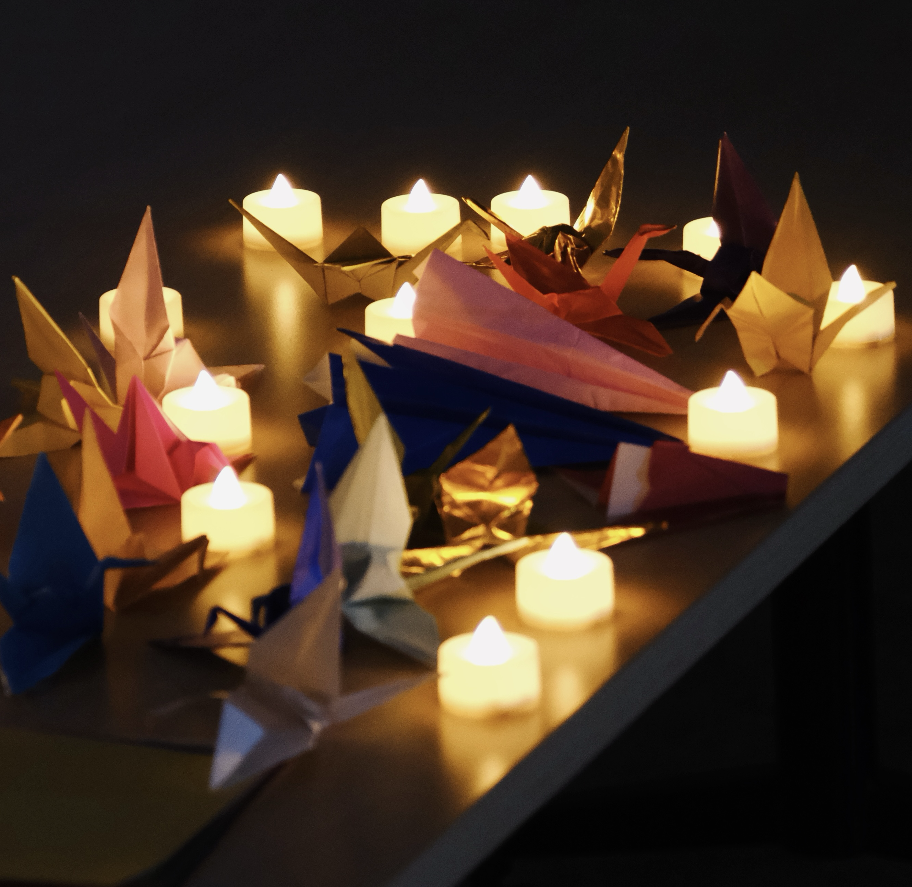
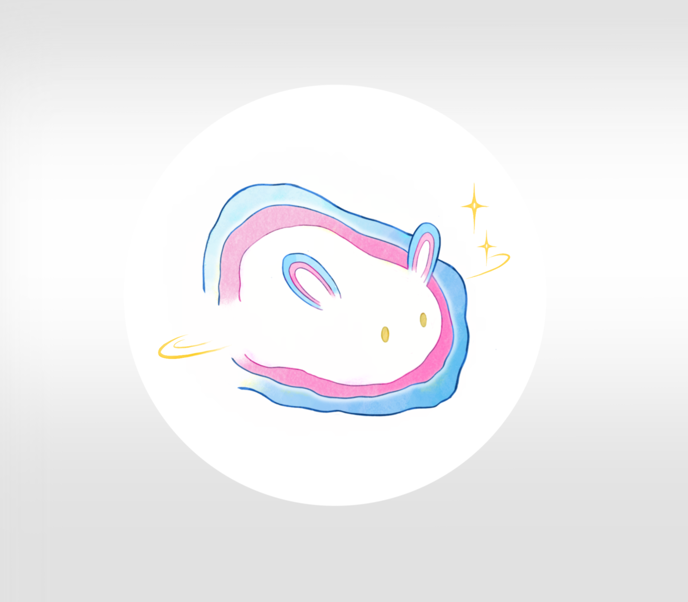
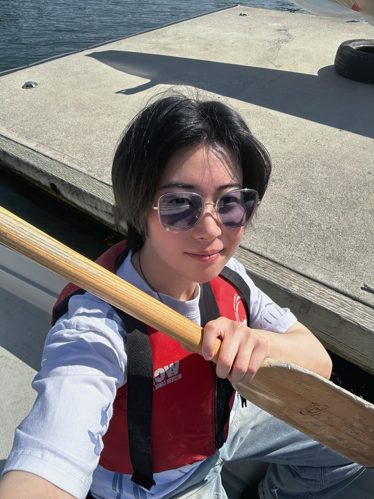
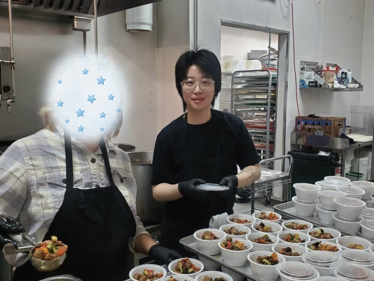
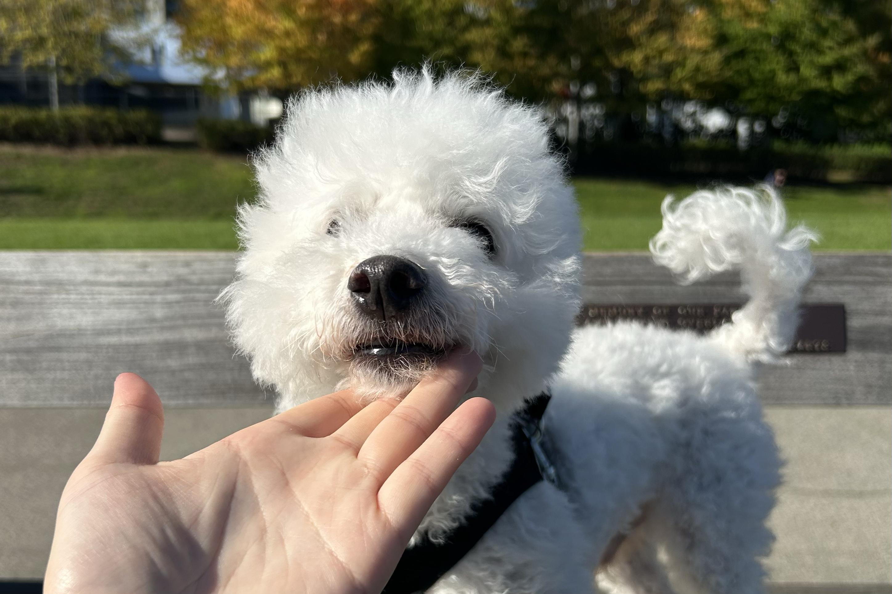
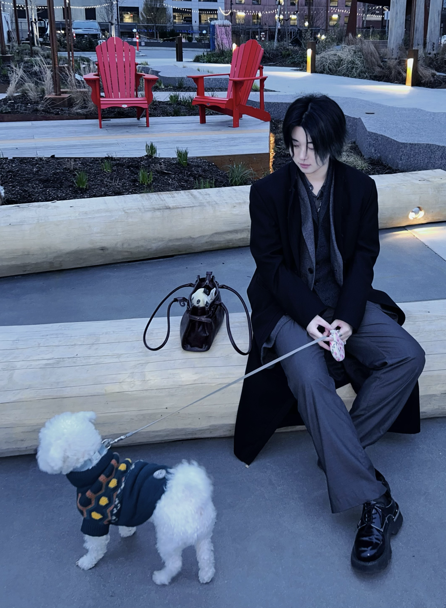
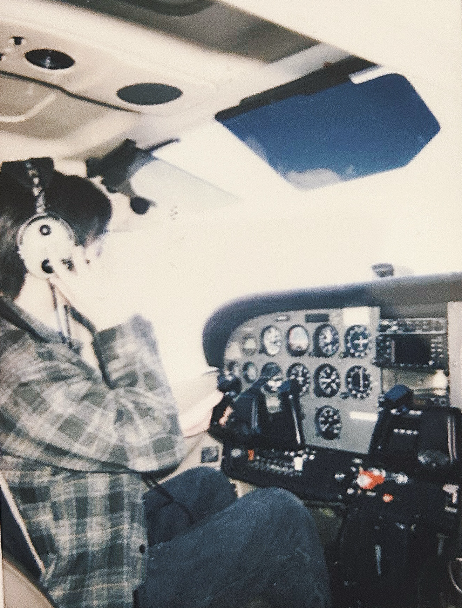
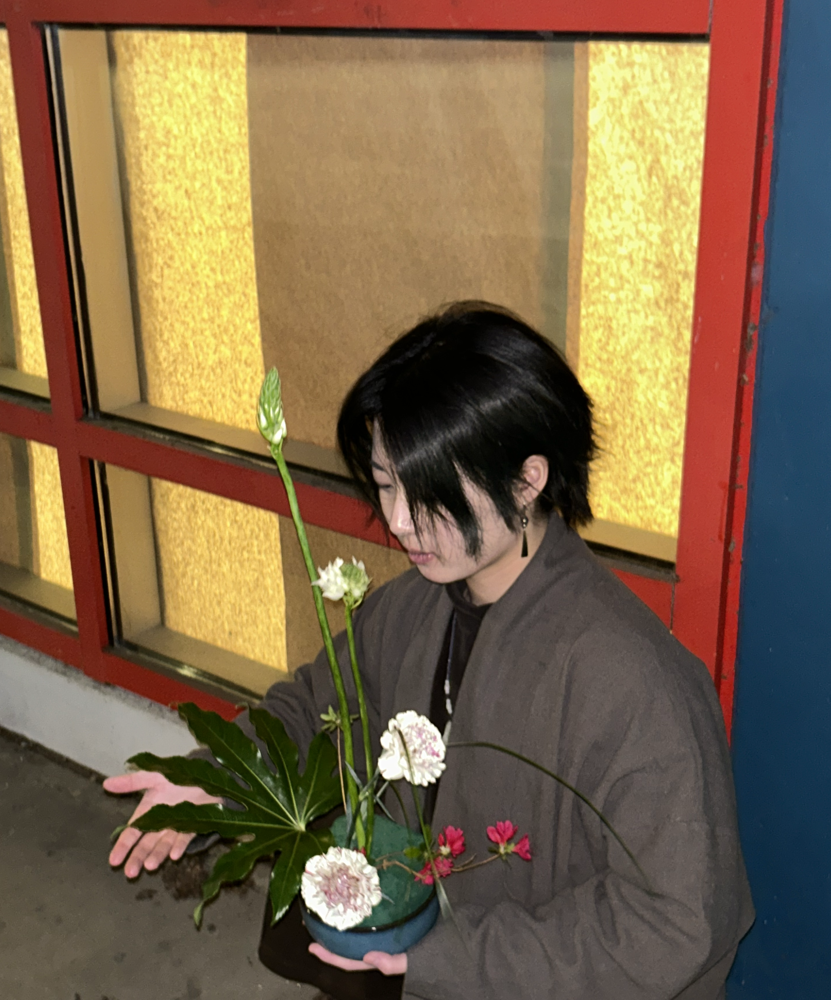

Community Design
HAITU Nonprofit
Co-founder and former Executive Co-director. I designed the organisation's logo and event posters, and helped organise and participate in community activities.
I study Interactive Arts & Technology at Simon Fraser University. With a background in fine art
and jewellery design, I work across illustration, visual design, front-end development, and
interactive media.
I am interested in accessibility and community-based technology, and I am currently seeking co-op
opportunities before graduating in December 2027.



Co-founder and former Executive Co-director. I designed the organisation's logo and event posters, and helped organise and participate in community activities.
I currently support data entry and the first testing framework using Airtable and Google My Maps. I also help older adults with everyday technology tasks such as WeChat, translation, downloads, photos, and internet access.

I have contributed to short-term community volunteering involving food preparation, meal portioning, cleaning, moving supplies, and event setup.


My ten-year-old companion, who moved with me from China to Canada.


